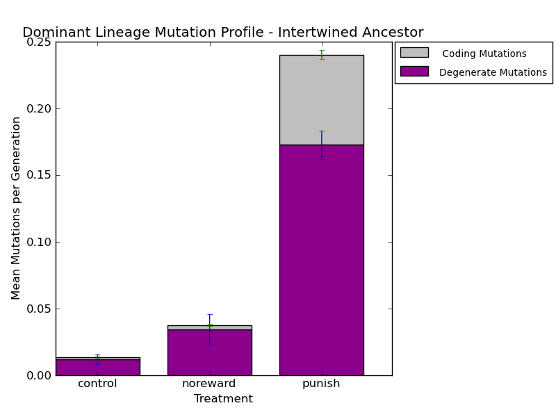
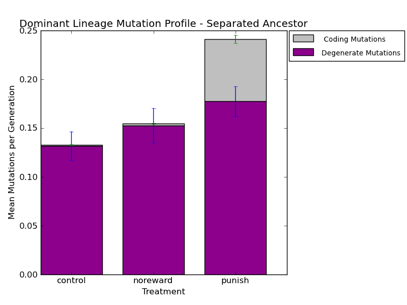
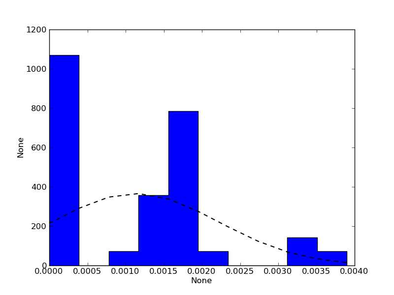
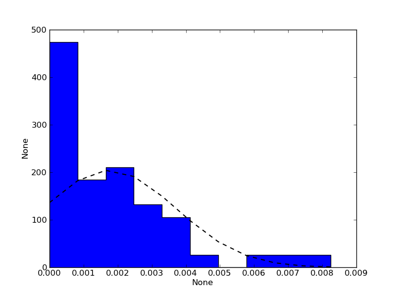
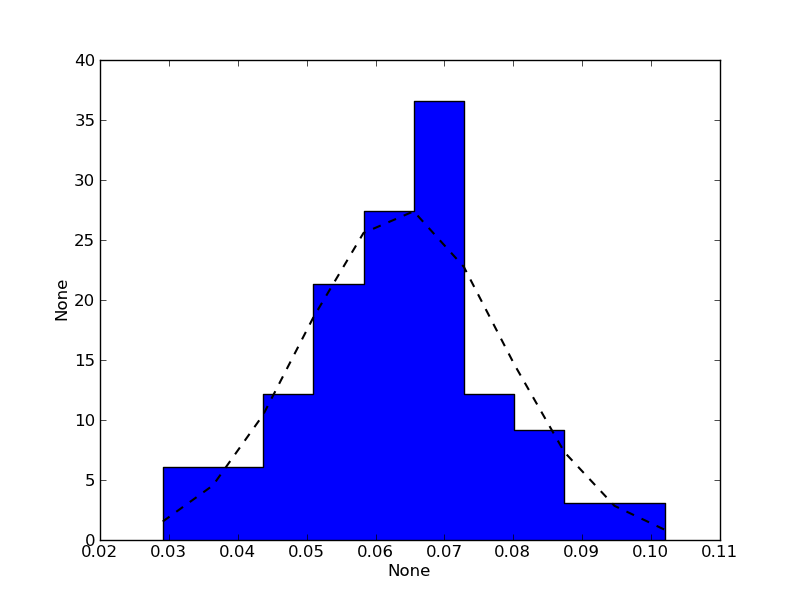
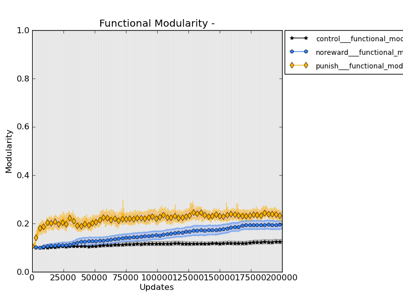
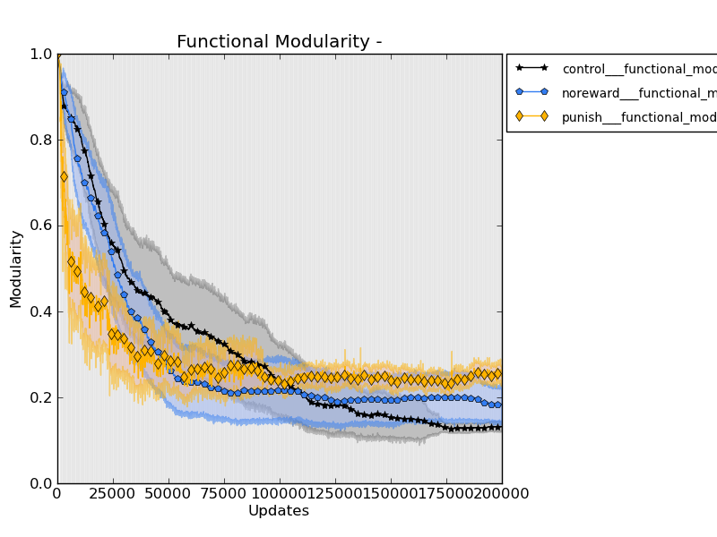

GENERAL NOTES:
DEVOLAB MTG NOTES:
Michael Laessig Talk NOTES:
STATUS:
STATUS:
(-?????.dat*), I had to submit job 080 to reanalyze the content. Also, I figured out a solution to getting my files in order. You prepend the following command before the command you will be using it in. It will work if the file list is supposed to go at the end of the command (which makes sense, I think). I modified analyze_single_run.bash on the HPCC.
ls physical_modularity_stats__organisms/control*sep*01/task_physical*-*.dat* | sort -n -t "-" -k 2 | xargs
:/Volumes/rosiec/research/devolab_research/evolution_of_modularity/raw_data/079/INTERTWINED/control_intertwined_790001/data/phenotype$ ls tasksites.org-*.dat | sort -n -t "-" -k 2 | xargs python ../../../../../../../scripts/common_modules_and_helper_scripts/extract_single_column_to_csv.py -s " " -c 1 >> bleh.csv; cat bleh.csv
STATUS:
../../../../scripts/evolution_of_modularity_pipelines/makegraphs.py -p "p*_????4?" -l ../../../../scripts/ map_task_all; ../../../../scripts/evolution_of_modularity_pipelines/makegraphs.py -p "p*_????5?" -l ../../../../scripts/ map_task_all for i in p*_????4?; do echo $i ; if [ -e $i/data ] ; then cd $i/data/; python ../../../../../../scripts//evolution_of_modularity_pipelines/draw_map_task__using_lineage_and_alignment.py --aligned_lineage_map --lineage_map --task_map --mutation_map --aligned_task_map --show_mutations --title "$i" -v -a ../$TREATMENT.png 5 6 8 lineage.dat ./phenotype/; cd ../../ ; else echo "Data dir not found." ; fi ; done ;for i in p*_????5?; do echo $i ; if [ -e $i/data ] ; then cd $i/data/; python ../../../../../../scripts//evolution_of_modularity_pipelines/draw_map_task__using_lineage_and_alignment.py --aligned_lineage_map --lineage_map --task_map --mutation_map --aligned_task_map --show_mutations --title "$i" -v -a ../$TREATMENT.png 5 6 8 lineage.dat ./phenotype/; cd ../../ ; else echo "Data dir not found." ; fi ; done ;
THOUGHTS:
LOG:
rosiec@atlantis:~/research/devolab_research/evolution_of_modularity/raw_data/078/INTERTWINED/control_intertwined_780001/data$ python ../../../../../../scripts//evolution_of_modularity_pipelines/calculate_mutation_metrics.py -v 5 6 8 lineage.dat ./phenotype/
rosiec@atlantis:~/research/devolab_research/evolution_of_modularity/raw_data/079/INTERTWINED/control_intertwined_790001$ python ~/research/devolab_research/scripts/common_modules_and_helper_scripts/aggregate_file.py --header -s "," --sum mutation_metrics.csv
STATUS
rosiec@malp:/Volumes/rosiec/research/devolab_research/evolution_of_modularity/raw_data/079/INTERTWINED$ cd ../INTERTWINED/; python ../../../../scripts/generate_graphs_from_raw_data/bar_chart_from_csv.py --legend --title "Dominant Lineage Mutation Profile - Intertwined Ancestor" -y "Mean Mutations per Generation" -x "Treatment" --column_labels "Degenerate Mutations, Coding Mutations" "3,1" mean_mutations_per_generation.png control___mean_dominant_lineage_mutation_metrics.csv noreward___mean_dominant_lineage_mutation_metrics.csv punish___mean_dominant_lineage_mutation_metrics.csv rosiec@malp:/Volumes/rosiec/research/devolab_research/evolution_of_modularity/raw_data/079/SEPARATED$ cd ../SEPARATED; python ../../../../scripts/generate_graphs_from_raw_data/bar_chart_from_csv.py --legend --title "Dominant Lineage Mutation Profile - Separated Ancestor" -y "Mean Mutations per Generation" -x "Treatment" --column_labels "Degenerate Mutations, Coding Mutations" "3,1" mean_mutations_per_generation.png control___mean_dominant_lineage_mutation_metrics.csv noreward___mean_dominant_lineage_mutation_metrics.csv punish___mean_dominant_lineage_mutation_metrics.csv

rosiec@malp:/Volumes/rosiec/research/devolab_research/evolution_of_modularity/raw_data/079/SEPARATED$ python ../../../../scripts/generate_graphs_from_raw_data/distribution_from_csv.py 1 histogram__control__mean_coding_mutations.png c*___mean_dominant_lineage_mutation_metrics.csv
  
rosiec@malp:/Volumes/rosiec/research/devolab_research/evolution_of_modularity/raw_data/079/SEPARATED$ ../../../../scripts/evolution_of_modularity_pipelines/makegraphs.py -e -l ../../../../scripts/ tasks fitness phys_mod_gapmean phys_mod_gapstd funct_mod
 
rosiec@malp:/Volumes/rosiec/research/devolab_research/evolution_of_modularity/raw_data/079/SEPARATED$ for i in *_??????; do if [ -e $i/data ] ; then cd $i/data/; python ../../../../../../scripts/evolution_of_modularity_pipelines/draw_map_task__using_lineage_and_alignment.py --lineage_map --show_mutations --show_phase --title "$i" -v -a ../.png 5 6 8 lineage.dat ./phenotype/; cd ../../ ; fi ; done ; rosiec@malp:/Volumes/rosiec/research/devolab_research/evolution_of_modularity/raw_data/079/INTERTWINED$ for i in *_??????; do if [ -e $i/data ] ; then cd $i/data/; python ../../../../../../scripts/evolution_of_modularity_pipelines/draw_map_task__using_lineage_and_alignment.py --lineage_map --show_mutations --show_phase --title "$i" -v -a ../.png 5 6 8 lineage.dat ./phenotype/; cd ../../ ; fi ; done ;